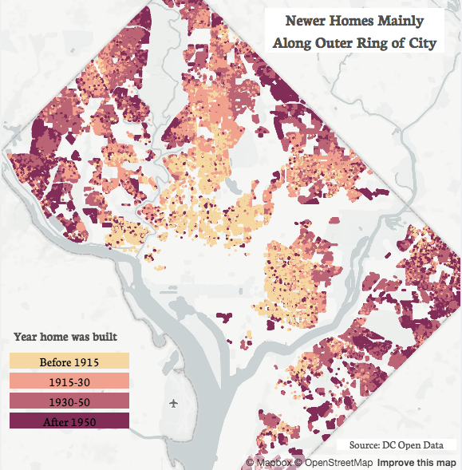

Charting the Divide in New and Old DC Homes
Kate Rabinowitz // August 1, 2016
While all of DC is a city, some of its residential neighborhoods feel more like a city than others. This feels intuitive walking along the smaller row houses of Capitol Hill compared to the more expansive mid-century homes in upper Northwest.
The maps below show this divide between homes in the inner and outer sections of the city by house type, year built, and lot size. Generally, homes located closer to the city core are older, built upon smaller lots, and almost entirely row houses. There is a strong interrelatedness between these three housing characteristics that can be seen by the almost identical areas of light shading across the maps. The area extends from Capitol Hill to Georgetown and from Shaw up to Petworth. Conversely homes outside of these neighborhoods tend to have been built later, on larger lots, and more likely to be single (self-standing) or semi-detached homes.


The divide becomes more distinct when looking at the data by ward. Below shows the median year a home was built, the median lot size, and the percent of homes that are not row houses. Wards 1, 2 and 6, which make up the inner part of the city, are all grouped together on the left.
Ward 2 has, on median, the oldest homes. The true median may even be older than 1900; that year is often used as default for building year when one cannot be determined. Homes in Wards 7 and 8 are the newest. A peculiar vestige of the L'Enfant Plan may slightly downplay lot size within the inner city - homeowners in the old city do not own their front yards, so front yards are not included in lot size. Ward 3 is by far the least residentially dense ward, with a median lot size of 5,100 square feet, three times that of Ward 6. Ward 3 also has the fewest row houses. In the inner wards more than 80% of all homes are row houses.
Technical notes: Data are available through DC’s open data website. You can find complete code for this on my github page.